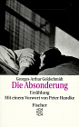
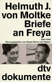
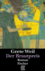
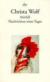
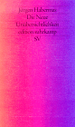

Sinn und Ziel
Verleihung 1999
Begründung 1998
Die Preisträger 1980 - 1998
| Jahr | Autoren | Titel | ISBN |
| 1998 Das Dritte Reich und die Juden, Bd.1, Die Jahre der Verfolgung 1933-1939  Saul Friedländer
Saul Friedländer | |||
| 1997 | Ernst Klee | Auschwitz, die NS-Medizin und ihre Opfer | 3-10-039306-6 |
| 1996 | Hans Deichmann | Gegenstände.Oggetti | 3-423-30592-4 |
| 1995 | Victor Klemperer | Ich will Zeugnis ablegen bis zum letzten. Tagebücher 1933 - 1945 | 3-351-02340-5 |
| 1994 | Heribert Prantl | Deutschland leicht entflammbar - Ermittlungen gegen die Bonner Politik | 3-596-12993-1 |
| 1993 | Wolfgang Sofsky | Die Ordnung des Terrors - Das Konzentrationslager | 3-10-072704-5 |
| 1992 | Barbara Distel/Prof. Wolfgang Benze Hrsg. | Dachauer Hefte Nr. 7 "Solidarität und Widerstand" | 3-423-04667-8 |
| 1991 |  Georges-Arthur Goldschmidt |
Die Absonderung | 3-250-10149-4 |
| 1990 | Lea Rosh/Eberhard Jäckel | Der Tod ist ein Meister aus Deutschland | 3-455-08358-7 |
| 1989 |  Helmuth James Moltke |
Briefe an Freya 1939 - 1945 | 3-406-35279-0 |
| 1988 |  Grete Weil |
Der Brautpreis | |
| 1987 |  Christa Wolf |
Störfall | 3-351-01860--6 |
| 1986 |  Cordelia Edvardson Cordelia Edvardson |
Gebranntes Kind sucht das Feuer | 3-446-14260-6 |
| 1985 |  Jürgen Habermas |
Die neue Unübersichtlichkeit | 3-518-13325-X |
| 1984 | Anja Rosmus Wenninger | Widerstand und Verfolgung | |
| 1983 | Walter Dirks | War ich ein linker Spinner? | |
| 1982 Franz Fühmann Der Sturz des Engels |
|||
|
1981
Reiner Kunze Auf eigene Hoffnung ISBN: 3-10-042007-1 |
|||
| 1980 Rolf Hochhuth Eine Liebe in Deutschland ISBN:3-498-02844-8 |